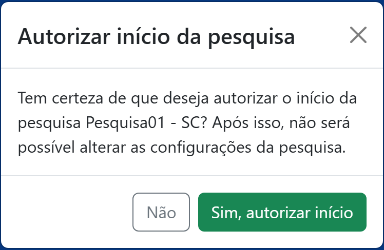

Parte 3 — Modo de operação
11. Autorizar início e iniciar entrevista
Enquanto a pesquisa não é autorizada, ninguém pode aplicar entrevistas — nem os entrevistadores, nem você. A autorização é o “sinal verde” da coleta.
11.1 Autorizar o início
No painel de gestão, toque no botão verde Autorizar início da pesquisa e confirme em Sim, autorizar início. A partir daí, o botão passa a mostrar Pesquisa iniciada.

11.2 Iniciar uma entrevista
Com a pesquisa iniciada, o botão Iniciar entrevista fica disponível — você mesmo(a) pode aplicar entrevistas. Se a pesquisa tiver segmentos, ao tocar em Iniciar entrevista o aplicativo pede para escolher o segmento em que a entrevista será feita (só é possível iniciar em segmentos com saldo a distribuir).
As perguntas aparecem uma de cada vez, com barra de progresso. Ao final, toque em Enviar respostas.
11.3 Pesquisa espontânea ou estimulada — em campo, o aplicativo é o mesmo
A escolha entre pesquisa espontânea (sem apresentar nomes) e estimulada (com apresentação de candidatos) é uma decisão de metodologia sua, do coordenador(a) — o aplicativo dá suporte às duas. Na modalidade estimulada, é responsabilidade sua providenciar e apresentar ao entrevistado a apresentação de candidatos, nomes, números, fotografias, cartões de estímulo ou qualquer outro material utilizado para estímulo ao entrevistado. Esse material fica fora do aplicativo — o app não o exibe nem o gerencia.
Em ambas as modalidades, o entrevistador usa o aplicativo da mesma forma: ele apenas registra no app a resposta dada pelo entrevistado. Ou seja, a modalidade escolhida não muda a operação do aplicativo em campo — muda apenas o que você, coordenador(a), prepara e apresenta ao entrevistado antes da resposta.
O passo a passo detalhado da entrevista (tipos de pergunta, voltar/avançar, descartar) é o mesmo do Guia do Entrevistador — útil para orientar sua equipe.